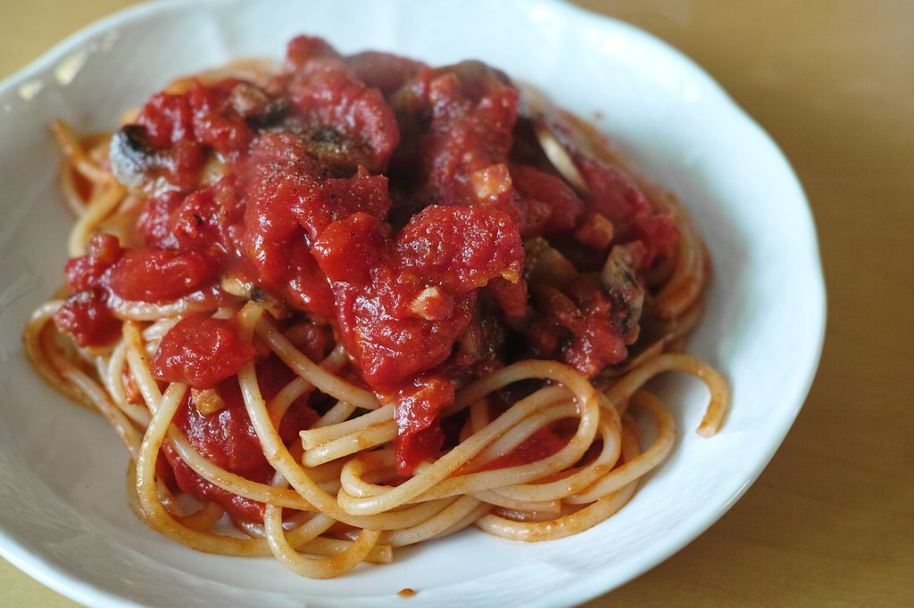

Recipe by: Olivia Mesquita, March 7th 2015, https://www.oliviascuisine.com/spaghetti-marinara/

Tomato spaghetti, Jun Seita, https://www.flickr.com/photos/jseita/8041827862
Ingriedients
1/4 olive oil
1 (28oz) can peeled San Marzano tomatoes
2 sprigs bazil
5 cloves of garlic, sliced thinly
Salt and pepper to taste
Sinch of sugar (optional)
1 lbs spaghetti, cooked according to package instructions
Freshly grated Parmigiano Reggiano to serve
instructions
In a large bowl, add the peeled tomatoes and mash them with a ptotato masher. If you dont like your sauce chunky, you can blend the tomatoes in a blender until smooth. reserve.
In a large skillet, heat the olive oil over medium heat and saute the garlic for a couple of minutes. be careful not to brown it.
Add the tomatoes and the basi and stir. Once it boils, turn the heat down to low and let it simmer, covered, for 15 minutes.
While the sauce is simmering, cook the spaghetti in a large pot of slated boiling water, according to package instructions.
After the sauce has been simmering for 15 minutes, season with salt and pepper to taste to see if it needs sugar. If its too acidic, add a pinch of sugar.
To serve, just toss the pasta with the sauce to coat and dacorate with some basil leaves. dont forget the Parmigiano Reggiano on the side, to please the cheese lovers like me.